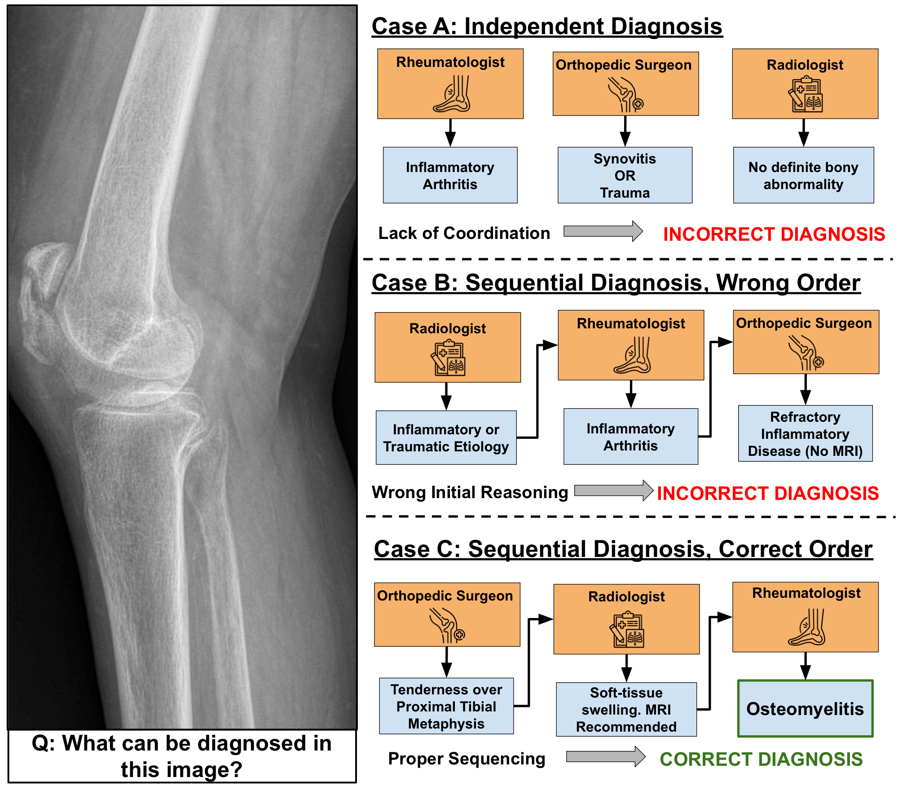
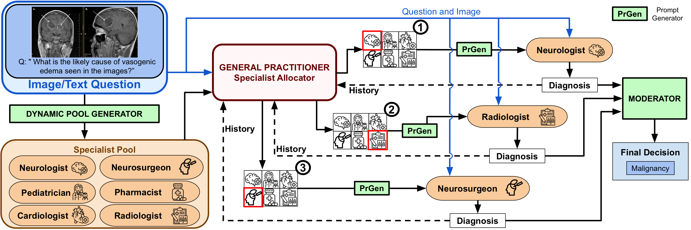
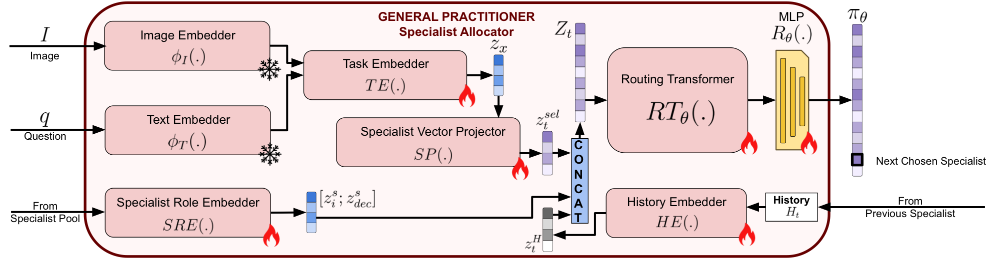
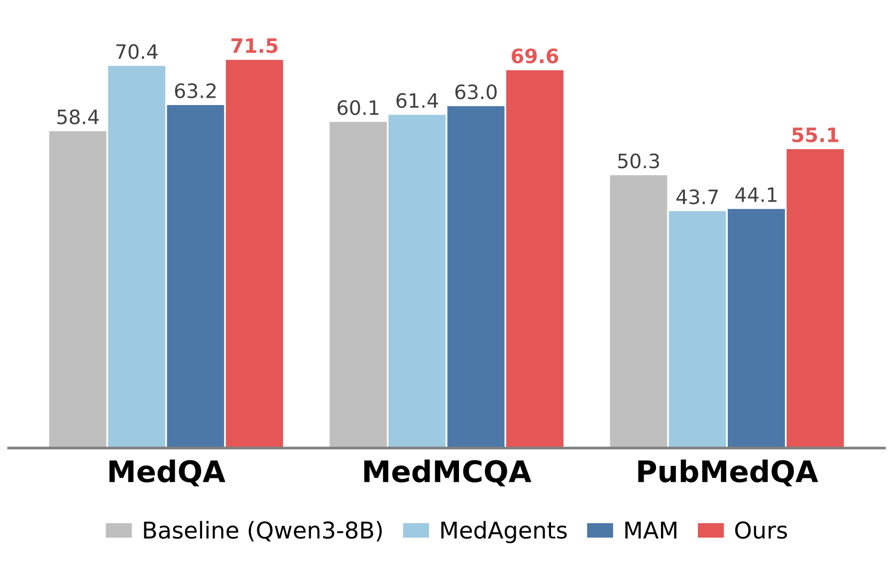
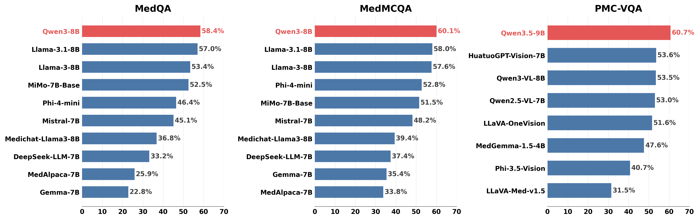
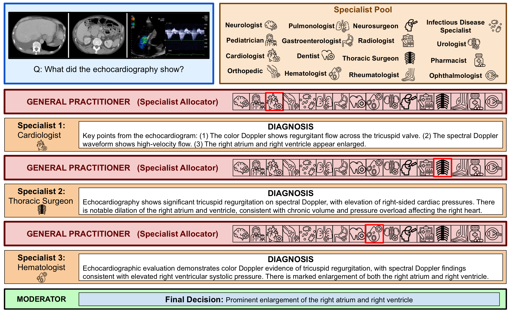

History-conditioned specialist routing for medical diagnosis. The same knee X-ray leads to different outcomes depending on how specialist consultations are coordinated. MedRoute uses accumulated diagnostic history to select the next specialist and construct a coherent consultation trajectory, correctly predicting osteomyelitis.
Large Multimodal Models (LMMs) have shown promising diagnostic ability in medical reasoning, yet they are typically used as monolithic generalists or as agents assigned to static clinical roles. Existing multi-agent medical systems improve specialization through fixed expert panels, role-based discussion, or external knowledge augmentation, but their coordination is often weakly adaptive and not directly optimized for final diagnostic correctness.
We propose MedRoute, a reinforcement-learning-based framework that formulates multi-agent medical diagnosis as a learned consultation policy. For each case, MedRoute constructs a compact, case-conditioned specialist pool and instantiates specialists with targeted clinical guidance. A General Practitioner (GP) then dynamically selects specialists conditioned on the input and accumulated diagnostic history, allowing each consultation to inform the next rather than producing individual expert opinions. To address the lack of step-wise supervision signals, we train the router with an outcome-level policy-gradient objective using group-relative advantage normalization, assigning credit to consultation trajectories based on final diagnostic correctness. A Moderator synthesizes the resulting diagnostic trajectory into the final prediction.
Across three text-only and five image-text medical QA benchmarks, MedRoute consistently outperforms both single-model and multi-agent baselines, with gains of up to +13.1% on text-only and +30.4% on image-text over the strongest single-model baseline.

For each case, a case-conditioned specialist pool is generated and specialists are instantiated with targeted clinical guidance. The General Practitioner (GP) router dynamically selects the next specialist conditioned on the input case and the accumulated diagnostic history. After up to K consultations, the Moderator synthesizes the diagnostic trajectory into the final prediction.

A lightweight GNN-conditioned transformer encodes the case representation and the current diagnostic history into a routing distribution over the case-conditioned specialist pool. Trained end-to-end with GRPO, the router is supervised by the final diagnostic outcome of complete consultation trajectories.
MedRoute is evaluated across eight medical QA benchmarks — three text-only and five image-text.
| Dataset | Modality | Task | Test set |
|---|---|---|---|
| MedQA | text | 5-option USMLE-style MCQ | 1,273 |
| MedMCQA | text | 4-option MCQ (Indian medical entrance) | 2,816 |
| PubMedQA | text | yes/no/maybe QA on PubMed abstracts | 1,000 |
| PMC-VQA | image-text | 4-option VQA on PubMed figures | 2,000 |
| PathVQA | image-text | open-ended pathology VQA | 6,719 |
| DeepLesion | image-text | NIH lesion identification | 4,736 |
| ChestX-ray8 | image-text | NIH chest X-ray classification | 17,853 |
| BTMRI | image-text | brain tumor MRI classification | 394 |

MedRoute outperforms the strongest single-model baseline (Qwen3-8B) and the multi-agent baseline MAM on MedQA, MedMCQA, and PubMedQA. Gains reach +13.1% on MedQA over the single-model baseline.

MedRoute improves over single-model and multi-agent baselines across five image-text benchmarks (PMC-VQA, PathVQA, DeepLesion, ChestX-ray8, BTMRI). Gains reach +30.4% on BTMRI over the strongest single-model baseline.

Across diverse medical cases, MedRoute selects a coherent sequence of specialists conditioned on the diagnostic history. Each specialist's reasoning shapes the next routing decision, and the Moderator integrates the trajectory into the final answer.
If you find our work useful, please give the repo a ⭐ and cite our paper:
@article{vayani2026medroute,
title = {MedRoute: RL-Based Dynamic Specialist Routing in Multi-Agent Medical Diagnosis},
author = {Vayani, Ashmal and Kulkarni, Parth Parag and Fioresi, Joseph and Wang, Song and Shah, Mubarak},
journal = {arXiv preprint arXiv:2604.06180},
year = {2026}
}